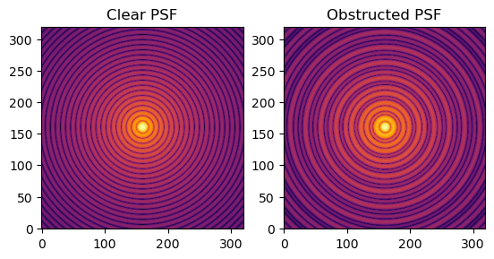
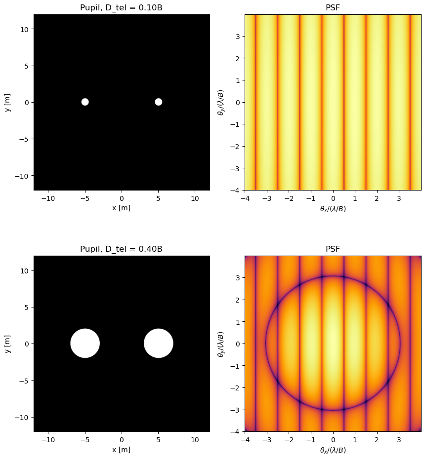
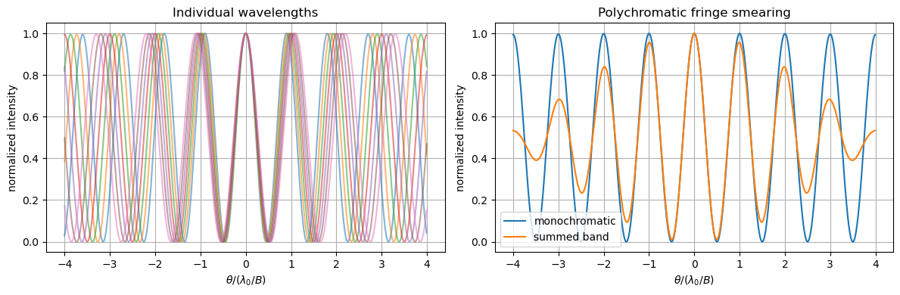
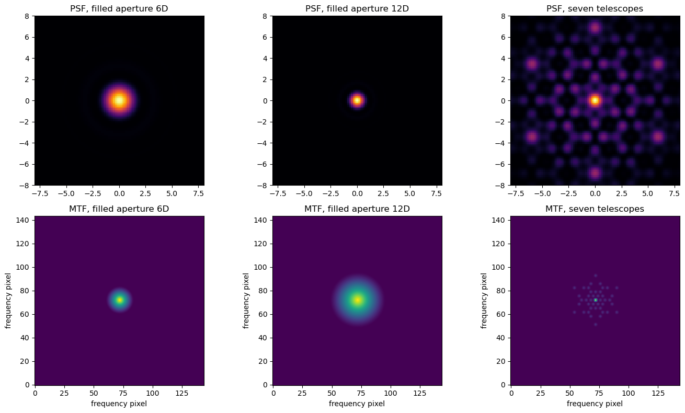
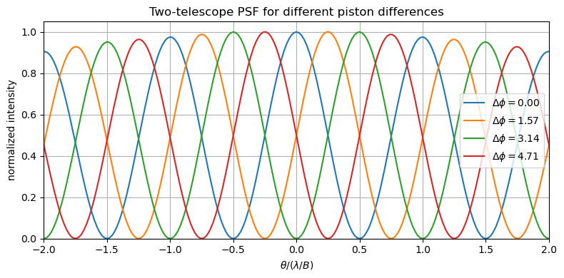
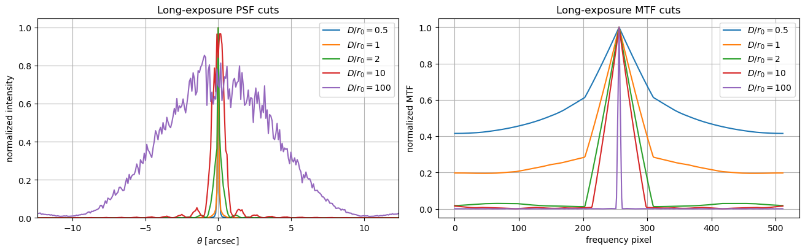

A series of simulations showing how the shape of a telescope's aperture sets the image it produces, from a single mirror to arrays of telescopes, and what the atmosphere does to it.
Year
2026
Context
Optics and Detectors course exercises
Method
Fraunhofer diffraction, PSF and OTF/MTF
Built with
Python, NumPy, Matplotlib, HCIPy
The idea
The image a telescope makes of a single star, its point spread function (PSF), is set by the shape of its aperture. In Fourier optics, the image-plane field is the Fourier transform of the pupil, and the PSF is its squared modulus. The optical transfer function (OTF) shows which spatial frequencies, or levels of detail, the telescope passes on to the image.
These exercises apply that one connection to more and more complex cases, from a single mirror to an array of telescopes seen through the atmosphere.
Single apertures
I started with a rectangular aperture and a telescope with a central obstruction, a large circular mirror with a smaller disc blocked in the middle. The obstruction keeps roughly the same diffraction scale but moves energy from the central peak into the rings around it.

The PSF of a clear circular aperture (left) and of one with a central obstruction (right).
A short section applied the same ideas to the Moon: how large a telescope would need to be to see the Apollo lunar lander, and how much light from a laser comes back from the retroreflectors left on the surface.
Interferometers
An interferometer combines light from separated telescopes. With two telescopes, the image of a star becomes a set of Young fringes. Their spacing is set by the separation between the telescopes, the baseline: a longer baseline gives finer fringes and measures a higher spatial frequency.
Real telescopes are not pinholes. With two finite apertures, the PSF is the diffraction pattern of a single telescope multiplied by the fringes. The single-telescope pattern acts as an envelope, and it becomes narrower as the telescopes get larger.

Two telescopes at the same separation B, with diameters of 0.1B (top) and 0.4B (bottom). Left: pupil. Right: PSF. The fringe spacing stays the same, and with larger telescopes the single-telescope diffraction pattern shows on top of the fringes.
Over a finite range of wavelengths, each wavelength makes fringes with a slightly different spacing. They only add up in step near the centre, so the fringes fade further out. This is bandwidth smearing.

Fringes at individual wavelengths (left), and their sum compared with a single wavelength (right).
With seven telescopes, every pair adds its own baseline. The OTF becomes a sparse set of points instead of a filled disc. I compared the array with filled apertures of 6D and 12D, where D is the diameter of one telescope. The array reaches about the same central sharpness as the 12D aperture, because both have a similar outer size. But it has much stronger sidelobes, because it samples only some spatial frequencies. Rotating the array fills in some of the gaps. This is the principle of aperture synthesis.

Filled apertures of 6D and 12D compared with the seven-telescope array. Top: PSF. Bottom: MTF, the spatial frequencies each one measures.
Atmospheric seeing
The atmosphere adds a phase error that changes with time. Its scale is the Fried parameter r0. For an interferometer, each telescope gets its own random phase offset (piston). Only the difference between them matters: it shifts the fringe pattern sideways. In a long exposure these random shifts add up, and the fringes wash out.

Two-telescope fringes for four different phase differences between the telescopes. The pattern keeps its spacing but moves.
For one large telescope, I split the pupil into cells of about r0, each with an independent random phase. This is a simplified model, but it shows the effect. As D/r0 grows, the instant image breaks into speckles. A long exposure blurs them into a broad spot whose size is set by r0 rather than by the telescope's diameter. As a bonus, I also simulated a phase screen drifting across the pupil (frozen-flow seeing).

Long-exposure PSF (left) and MTF (right) cuts for D/r0 from 0.5 to 100, with angle in arcseconds. As D/r0 grows, the image broadens from the diffraction size to the seeing size, and the telescope passes fewer spatial frequencies.